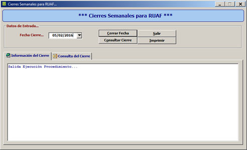

Genera el listado de los afiliados a CAXDAC (activos y en receso), con la informacion requerida según Resolucion 1056 de 5 de abril de 2015, del Ministerio de Salud y Proteccion Social. Anexo Tecnico No. 01.

Esta informe se debe ejecutar todos los viernes, para remitir al Ministerio de Salud y Proteccion social.
Cerrar Fecha: Se utiliza para ejecutar el procedimiento con fecha de viernes de cada semana.
Consular Cierre: Se utiliza para validar la información del cierre anterior.